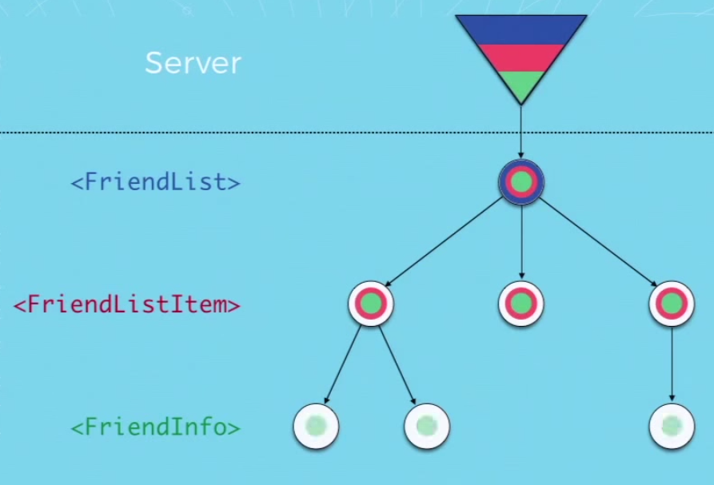
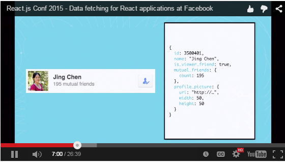
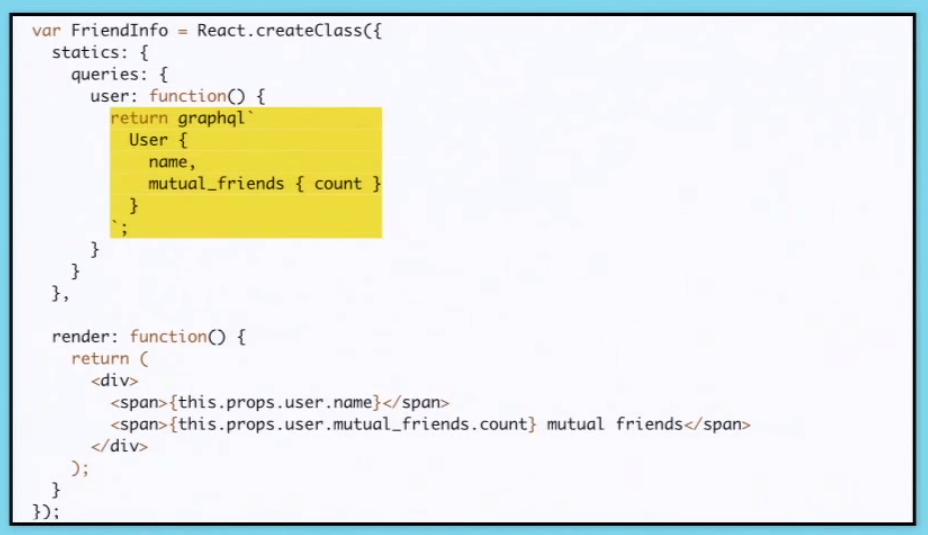
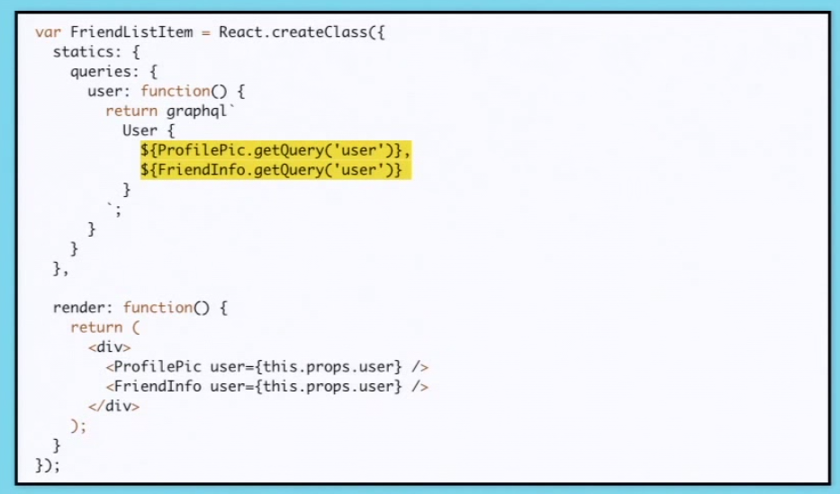
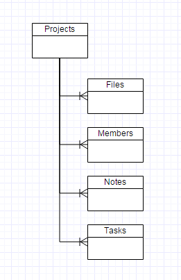

jrhicks.github.io
jrhicks.github.io
Client Side Routing Notes
Navigating Screens and Data In A React Flux App
Navigating Screens and Data In A React Flux App
React Router Increases Your Productivity - 32 Minute Video - Jan 28th, 2015 at React.js Conf
Concepts
"Screen Creation Productivity"
Flows - "Flows are just as important to good interfaces as individual screens are" - Ryan Singer, Basecamp
"If your user interface is nested then your routes should be nested"
"Cool URIs don't change" Time Berner Lees
Working URLS are a core to Web Applications
<Route handler={App} path="/">
<DefaultRoute handler={Home} />
<Route name="about" handler={About} />
<Route name="users" handler={Users}>
<Route name="recent-users" path="recent" handler={RecentUsers} />
<Route name="user" path="/user/:userId" handler={User} />
<NotFoundRoute handler={UserRouteNotFound}/>
</Route>
<NotFoundRoute handler={NotFound}/>
<Redirect from="company" to="about" />
</Route>
Guide to React Router in a Flux App
You can create your own RouterStore and fire an action in run callback:
Router.run(routes, (Handler, state) => {
ActionCreators.changeRoute({ state });
React.render(<Handler/>, document.body);
});
Let RouterStore keep router state and add a public method to obtain it. This way your action creators and other stores can learn about current router state.
In case you like alt like me. Here is a alt-react-router-example - An example project showing a way to use React-Router (and async calls) with the Flux implementation, Alt.
Dan Abramov introduces the concept of Content Stores in his Flux React Router Example
As users navigate screens they are also navigating through your applications data and triggering server actions to fetch fresh data. In the ContentStore pattern, ContentStores harvest their objects from all server actions.
Imagine that each server response had an 'entities' attribute and any returned data was in it. Then each ContentStore could look in the entities from the response and see if there were any new data for itself. In this code snippet from UserStore.js, the User Store inspects the response for any new user entities and merges them in if found.
UserStore.dispatchToken = AppDispatcher.register(function (payload) {
const { response } = payload.action;
const entities = response && response.entities;
const fetchedUsers = entities && entities.users;
if (fetchedUsers) {
mergeIntoBag(_users, fetchedUsers);
UserStore.emitChange();
}
});
Introducing Relay and GraphQL 26 minutes - Greg Hurrell - 2015/02/02
Relay and GraphQL are less concerned with offline date and more interested in decoupling the server and the UI. With GraphQL each component can register their complex data needs (data and summary) and top level components can compose these together and send them to a generic server endpoint.
"We need a way for each component to staticly define its data needs". Stop writing dedicated endpoints.


"We want to specify the data need in statics so we can access them without instantiating the component"

The top level component can compose the queries of its children.

The offline partitions store approach is a strategy to register partitions of data you want to store offline and synchronize with a server as available.
Each partition would keep track of its sync status and some basic info to help remove itself should space become limited on the front end.
Consider the following schema for a project management application.

When the user navigates into a project 12312 the following actions get fired:
ensurePartition({ entity: 'files', filter: {projectId: 12312, userId: 23}});
ensurePartition({ entity: 'members', filter: {projectId: 12312, userId: 23}});
ensurePartition({ entity: 'notes', filter: {projectId: 12312, userId: 23}});
ensurePartition({ entity: 'tasks', filter: {projectId: 12312, userId: 23}});
The OfflinePartitionStore would handle ensurePartition by either updating the lastEnsured timestamp or appending an empty (unsynced) partition.
Assuming this app has no previous data, these actions would fill the OfflineParitionStore with a bunch of empty partitions, the end product would resemble something like this:
paritions = [
{
partition: { entity: 'files', filter: {projectId: 12312, userId: 23}},
lastEnsured: '2015/03/14 9:26',
lastSync: null,
lastUpdatedCursor: null,
cursorAtEnd: false,
records: [],
conflicts: [],
localChanges: []
},
{
partition: { entity: 'members', filter: {projectId: 12312, userId: 23}},
lastEnsured: '2015/03/14 9:26',
lastSync: null,
lastUpdatedCursor: null,
cursorAtEnd: false,
records: [],
conflicts: [],
localChanges: []
},
{
partition: { entity: 'notes', filter: {projectId: 12312, userId: 23}},
lastEnsured: '2015/03/14 9:26',
lastSync: null,
lastUpdatedCursor: null,
cursorAtEnd: false,
records: [],
conflicts: [],
localChanges: []
},
{
partition: { entity: 'tasks', filter: {projectId: 12312, userId: 23}},
lastEnsured: '2015/03/14 9:26',
lastSync: null,
lastUpdatedCursor: null,
cursorAtEnd: false,
records: [],
conflicts: [],
localChanges: []
}
]
At this point an OfflinePartitionSyncUtil would attempt to download the data sorted by updated_at ascending. It hits a generic server endpoint and passes its partition params and lastUpdatedCursor to the server. The server would respond with the next page of records and an indication if this was all that remains.
Lets focus in on what the notes partition might look like once all data from the server was downloaded and we have all 3 notes in the store.
partitions = [
{
partition: {entity: 'notes', filter: {projectId: 12312, userId: 23}},
lastUpdatedCursor: '2015/03/14 9:26',
cursorAtEnd: true,
lastEnsured: '2015/03/14 9:26',
localChanges: [],
conflicts: [],
records: {
4545: {
data: {name: 'Lili', body: 'Good Morning'},
},
8723: {
data: {name: 'John', body: 'Good Bye'},
}
3232: {
data: {name: 'Jeff', body: 'Hello'},
}
}
}
]
After a user on the front end makes an edit to 8723 we will want to catalog the update and keep a copy of the original value. This original value will come in handy later when we want to ensure that we can unambigiously merge the data with the server. Lets say two notes have been edited since we've been offline.
partitions = [
{
partition: {entity: 'notes', filter: {projectId: 12312, userId: 23}},
lastUpdatedCursor: '2015/03/14 9:26',
cursorAtEnd: true,
lastEnsured: '2015/03/14 9:26',
localChanges: [8723, 3232],
conflicts: [],
records: {
4545: {
data: {name: 'Lili', body: 'Good Morning'},
},
8723: {
data: {name: 'John', body: 'Good Bye Friends'},
original: {name: 'John', body: 'Good Bye'},
}
3232: {
data: {name: 'Jeff', body: 'Hello Friends'},
original: {name: 'Jeff', body: 'Hello'},
}
}
}
]
OfflinePartitionSyncUtil will sweep through the partitions and notice 2 local changes and attempt to send these changes to the server. The server will receive the new data and the original data so that it can determine if both it and the client tried to change the same attribute.
In this hypothetical situation, lets assume that 8723 was successful, and 3232 failed. Our new store might look like:
8723 is removed from localChanges and its original data was pruned
3232 is added to conflicts and its record is decorated with details
partitions = [
{
partition: {entity: 'notes', filter: {projectId: 12312, userId: 23}},
lastUpdatedCursor: '2015/03/14 9:30',
cursorAtEnd: true,
lastEnsured: '2015/03/14 9:30',
localChanges: [3232],
conflicts: [3232],
records: {
4545: {
data: {name: 'Lili', body: 'Good Morning'},
},
8723: {
data: {name: 'John', body: 'Good Bye Friends'},
}
3232: {
data: {name: 'Jeff', body: 'Hello Friends'},
server: {name: 'Jeff', body: 'Hello Everyone'},
original: {name: 'Jeff', body: 'Hello'},
lastSyncAttempt: '2015/03/14 12:23:23',
}
}
}
]
A background action would work to keep these offline partitions in sync, simply updating the conflicts and sync status as needed.
If the user navigated to a different project, the notes store would create a new partition for the new projectId. If space became limited on the front end, the stores could dispose of data from other partitions that was in sync.
Lets look closer to what this might look like as an alt store
import alt from '../alt';
import PartitionActions from '../actions/PartitionActions';
class PartitionedNotesStore {
constructor() {
this.bindActions(PartitionActions);
this.partitions = [];
}
onEnsurePartition(partition) {
if (this.includes?(partition)) {
this.updateLastEnsured(partition);
} else {
this.createPartition( partition );
}
}
onDownload(data) {
let {partition, lastUpdatedCursor, records} = data;
// update partition and merge records, flag and decorate conflicts
}
onLocalUpdate(partition, record) {
// Update records
}
onServerUpdateSuccess(parition, record) {
// Handle it
}
onServerUpdateConflict(partition, record) {
// Handle it
}
}